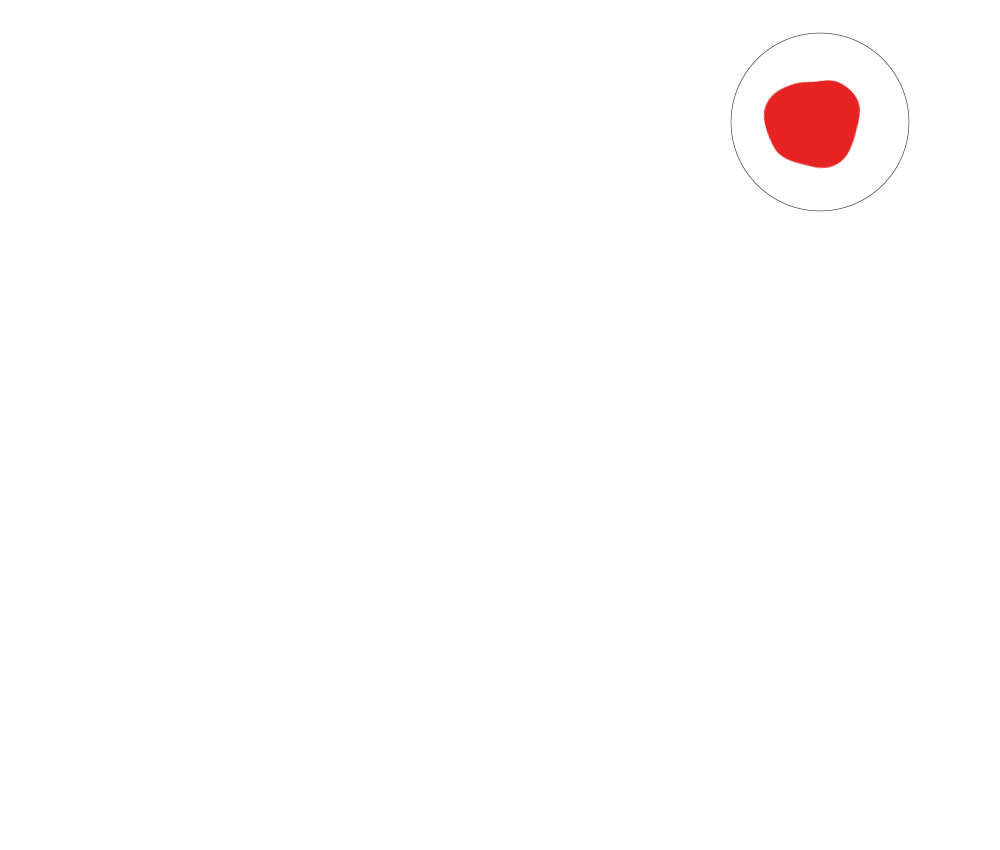
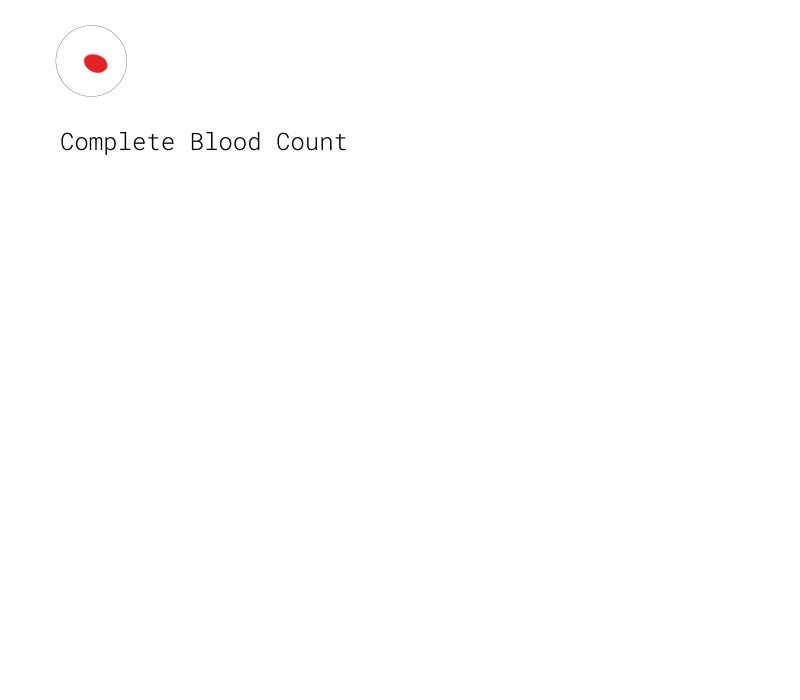
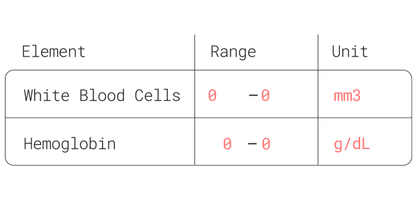
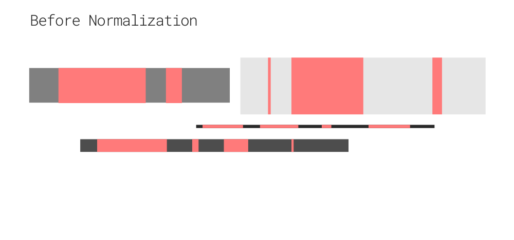
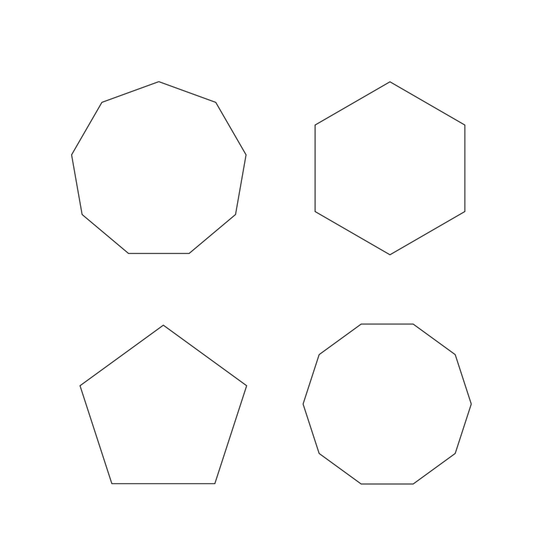
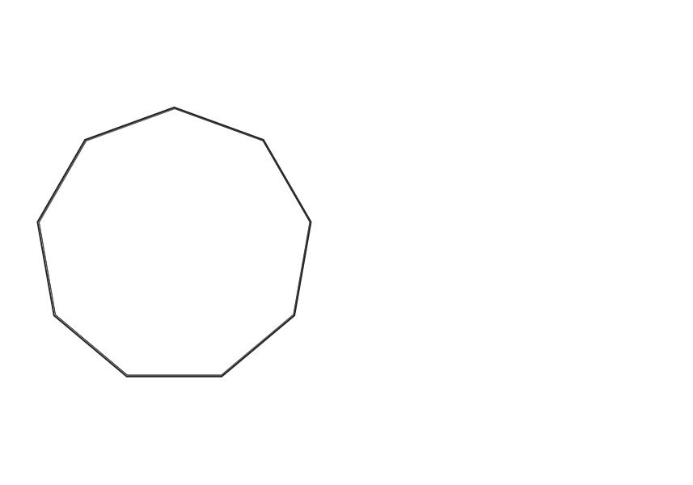

your blood, your data.
Many of us go through the blood withdrawal procedure for different reasons. However, the results usually come in an unusual
format that sometimes can only be understood by professionals. Blood is a very important part of our bodies, aside from transporting oxygen, it stores important data about the body's performance. Therefore it's important that we
understand it and become participants in our own health and bodies.
How can we make it simpler and more accessible?
Start Scrolling

1.
Blood consists of different elements, there are four main groups that most people get their blood tested on: Complete Blood Count (CBC),
Differential Blood Count (DBC), Basic Metabolic Panel, and Renal and Liver Function Tests. Each group represents blood elements.Every element
is different, it has a different function, different range, and different unit. This is why it's hard sometimes to make sense out of the test
results when each result looks different.
Let's use the Complete Blood Count as an example.

2.
The Complete Blood Count contains 9 blood elements, each element has a differentrange and value [See example below]
and they all have different measurment units. Therefore normalization is an important step for the visualization.

What is normalization?
3.
Normalization is the process of converting irregular values to more standardized
values by using simple math equations. [See example below] that explains the concept of normalization, each bar has a different
length, weight, and unique characteristics. Imagine fitting these bars in one template, it's not possible without using normalization.
After normalization, they all have the same length and weight with maintaining the characteristics. In our case, to make the test results easier to read, we need to normalize the values and
the units.

Why is it necessary?

4.
To understand the results, we normalized blood elements to have a standard range and to remove the units. To make it more
accessible, they will be fitted in polygons, each blood component is represented in a different polygon, we're using nonagon
in the CBC example because it contains 9 elements. Normalization is an important step to make it possible for the
elements to be fitted in one polygon.
How are the polygons going to show the test results?

5.
As a result of normalization, all the elements now share the same
normal range, the thickness of the polygon
determines the noraml range for that blood component, any value outside the ring is considered
above normal or
under normal
I'm Ready